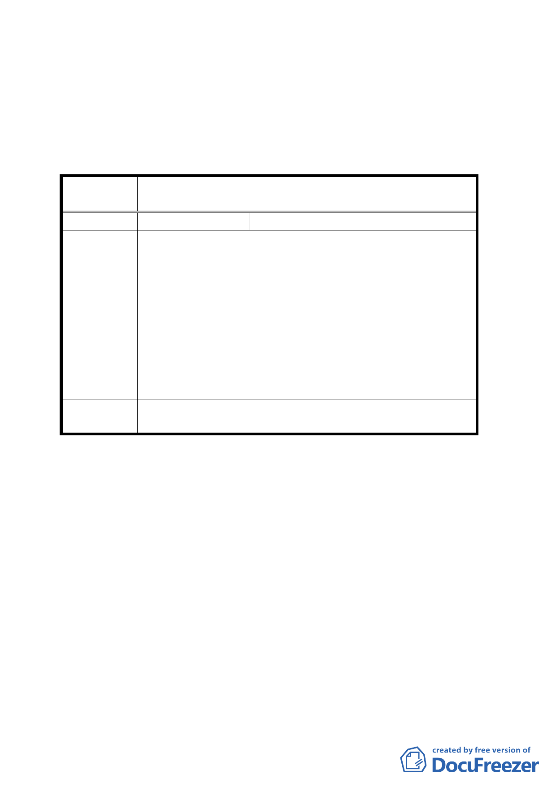

通盤考量。
二、公民或團體陳情意見詳如綜理表所示。
臺北市都市計畫委員會公民或團體陳情意見綜理表
案
名
變更臺北市大同區迪化街二段部分第三種住宅區為道路用
地計畫案
編 號 １ 陳情人 財政部國有財產局台灣北區辦事處
經查案內本局管理之土地為大同區文昌段二小段四六八之
四、四九一、四九一之一、之二、之三、四九二、四九二
之一、之二、之三、之四、之五、之六及四九三之二地號
陳情理由
十三筆國有土地，其中部分土地已出租在案。另依案附公
開展覽所示，變更計畫範圍現為都市計畫道路開闢完竣之
方正街廓，為一完整理想之住宅用地，道路系統配置充分
完備，應無需再行配置，且變更範圍斜切完整街廓，有礙
土地完整利用，對於交通流量、動線及管制亦造成衝擊。
建議辦法
基於變更前後之影響因素考量，並預計未來發展情形，仍
請維持使用分區為第三種住宅區為妥。
委員會決議
本路段通行多年，依目前單行管制對交通衝擊不大，同意
依市府所提公展方案照案通過。
參、「台北市電力建設專案報告」簡報
說明：
ㄧ、本案係依據本會九十二年十月二十七日第五一九次委員
會議對報告事項「變更台北市文山區實踐段一小段２２
６地號土地第三種住宅區為電力設施用地計畫案」決
議：「本案請發展局再與台電公司協調，並先請台電公司
向本會簡報臺北市區整體用電需求計畫及整體用地計
畫。」辦理。
二、台電公司於九十三年二月六日函送簡報資料到會，經本
第 6 頁，共 12 頁